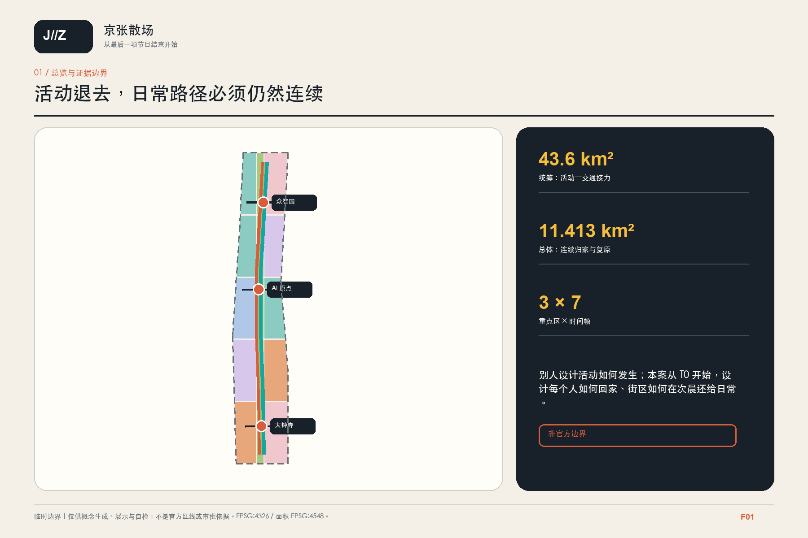
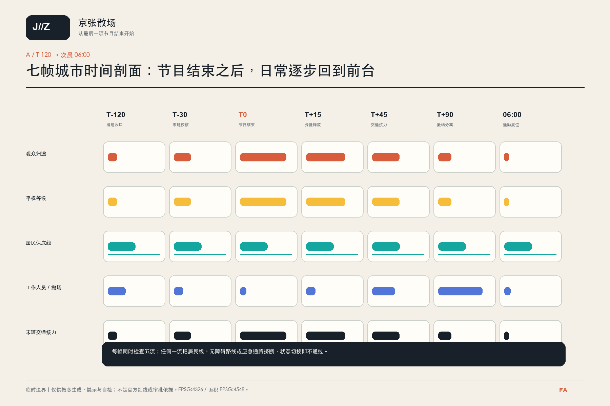
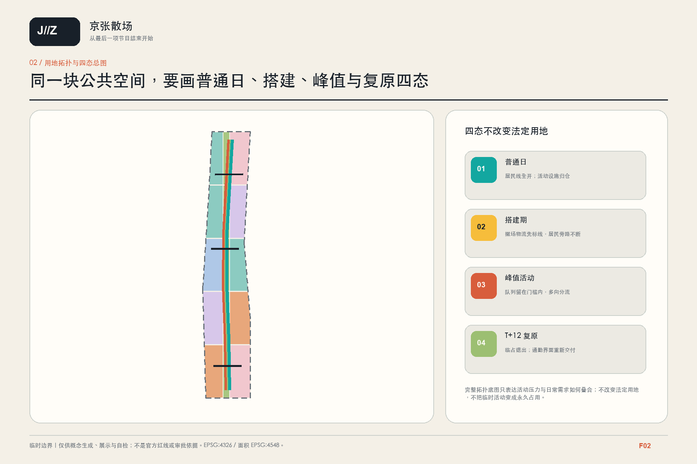
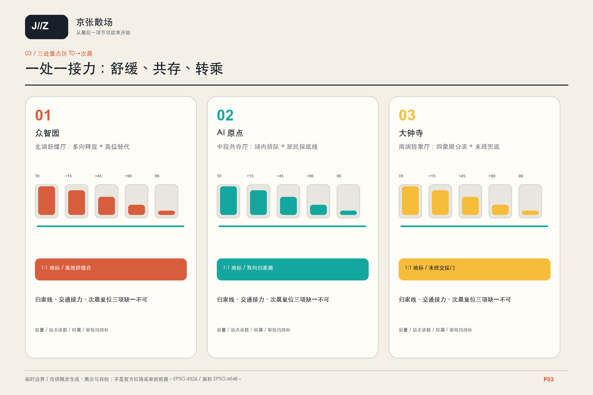
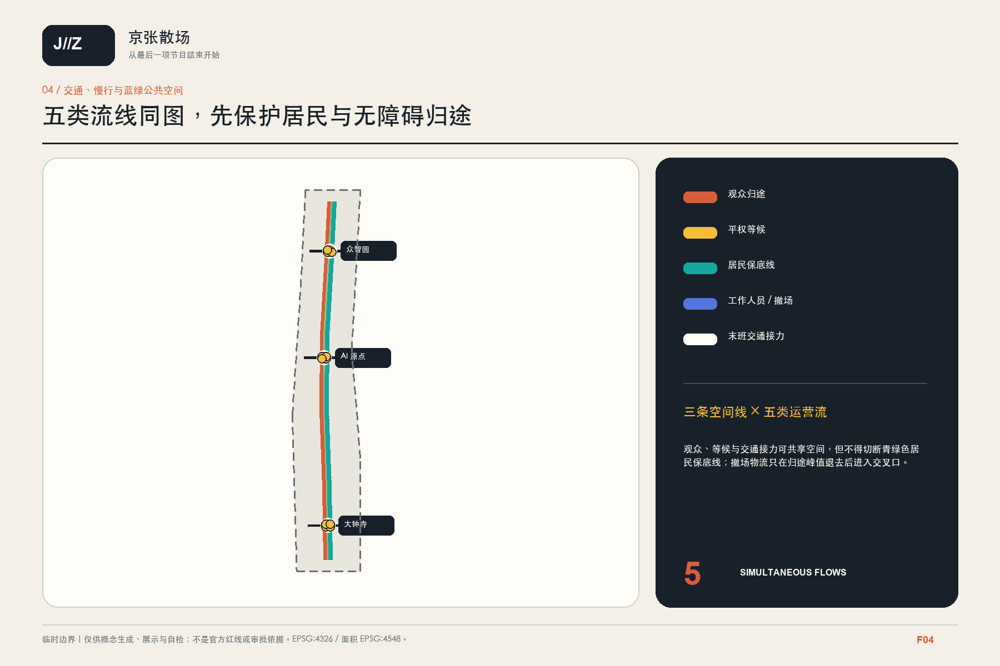
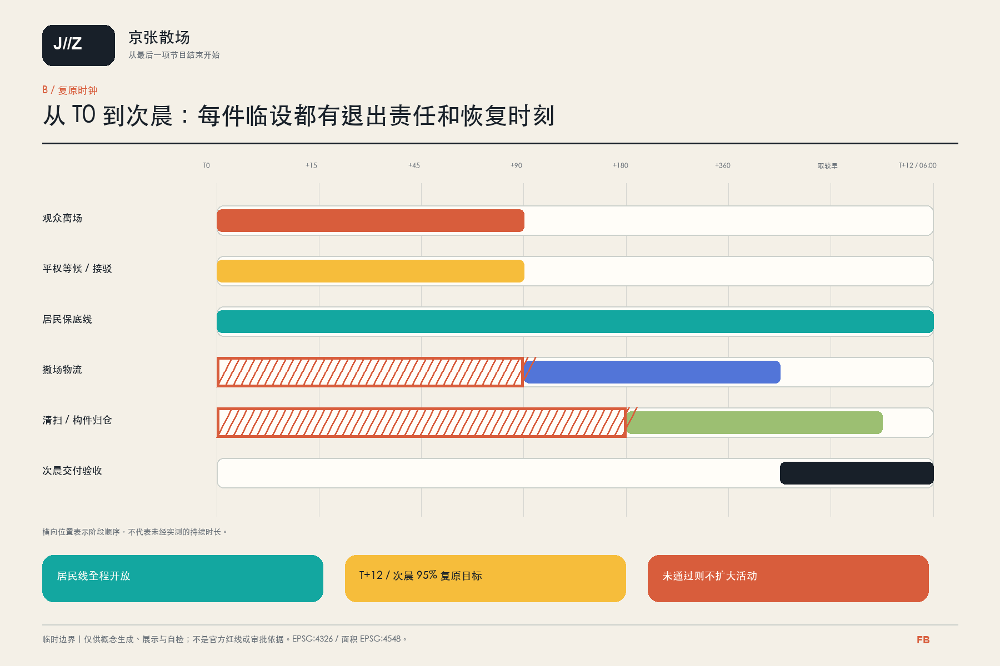
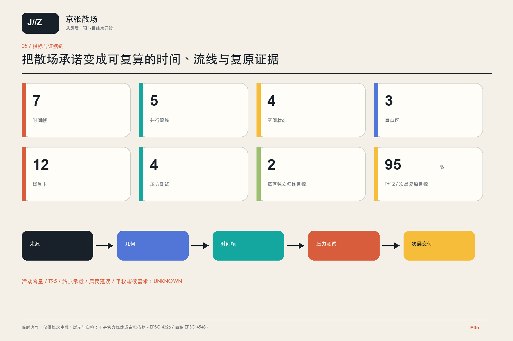

众智园 · 舒缓厅
多向释放；低位路径关闭时仍有高位替代。
别人设计活动如何安全发生；我们从最后一项节目结束开始，设计每个人如何回家、街区如何在次晨还给日常。

搭建收口：居民旁路先行


多向释放；低位路径关闭时仍有高位替代。
排队留在活动用地；居民归家线绕开队列与文保静区。
四象限分流、末班接力与次晨通勤复位。




边界、重点区与面积均为 provisional；活动容量、站点承载、T95 和居民延误保持 unknown。
CC BY 4.0 · windchaser1280 · Codex / GPT-5 family · 2026-08-11